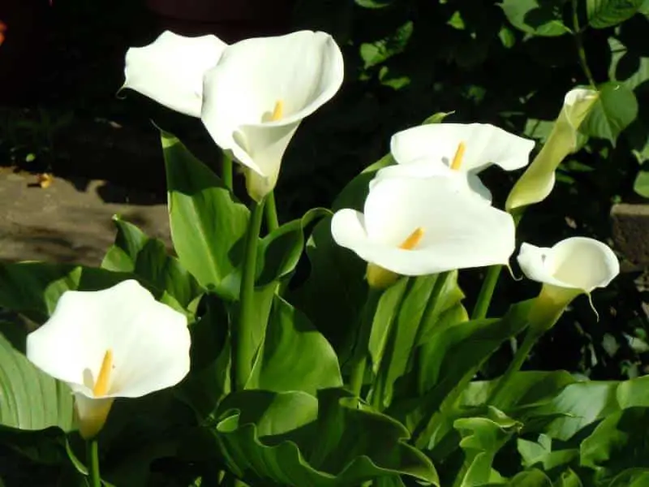

أنواع الورد الأبيض مع الصور
للورد الأبيض العديد من الأنواع والأشكال وفيما يلي سنحاول تقديمها لكم لكي تتعرفوا معنا على أهم أنواع الورد الأبيض كما يلي:
أولاً الورد الأبيض أيفون رابييه: وهي عبارة عن وردة كاملة تنمو في مجموعات لها رائحة طيبة كما أنها ساحرة من حيث شكلها والشجيرات التي تنموا بينها.

ثانيًا ورد الفلامنجو الأبيض: تعد هذه الوردة من أشهر الورود البيضاء المتعارف عليها وتأتي على شكل قلب وتعبر عن الحب والوفاء كما أنها تتميز بألوانها الزاهية والجميلة.
أسماء الورد الطبيعي مع الصور
الورد الطبيعي يحمل العديد من الأشكال والأنواع المميزة والجميلة التي لا يمكن بأي حال من الأحوال حصرها في عدد محدد ولكن على الأقل سنحاول جمع أكبر قدر ممكن من أنواع الزهور المتعارف عليها وتقديم معلومات مميزة عنها فيما يلي:

*زهرة النرجس*
تم تداول الكثير من القصص والأساطير عن هذه الزهرة وعما ترمز له من تكبر وغرور كبير بالنفس حتى أن اسمها يحمل من
صفة النرجسية الكثير، وتعد من الزهور الشعبية المشهورة ذات الرائحة الجميلة والمميزة في العالم وكذلك المعروفة
بعدائيتها وقتلها لكافة النبات التي تنمو بجوارها وتتميز بلونها الأصفر الجميل وهناك أنواع منها تملك حواف
بيضاء.

*زهرة القرنفل*
تعد زهور القرنفل واحدة من أقدم الورود التي عرفها الإنسان في حياته وتتميز برائحتها الجميلة والمميزة وهي تنمو
بشكل كبير في البحر الأبيض المتوسط وتعد من الورود التي تملك خلفية تاريخية هامة فقد ورد في الأساطير
الكاثوليكية أنه عندما بكت السيدة مريم العذراء على أبنها نبي الله عيسى عليه السلام تحولت دموعها إلى زهور
القرنفل.

*وردة الأقحوان*
تعد من الزهور المميزة التي تملك رائحة تشبه إلى حدًا كبير رائحة الكافور وهي من الزهور العطرية التي تحتوي على
زيوت، وتعرف بزهرة القبور في فرنسا وعلى العكس في اليابان فهي تستخدم لتزين الأعراس وتعد رمز للأفراح عمومًا،
ناهيك عن استخداماتها الطبية المميزة فيعرف عنها أنها من المضادات الحيوية القوية والمساعدة في القضاء على
النزلات المعوية وطرد الديدان وعلاج الروماتيزم والنقرس وتغذية الشعر.